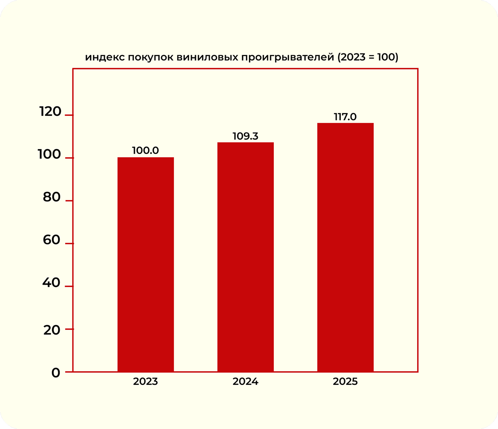
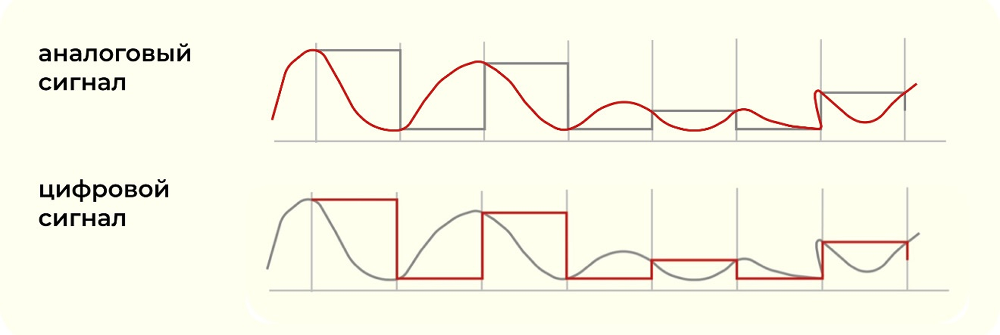

Сегодня аудиоконтент стал максимально доступным, любую песню можно включить за секунды прямо с телефона. На этом фоне физические носители звука не исчезли. В чем преимущество старых виниловых проигрывателей и почему они до сих пор сохраняют свою популярность?
Н1: Винил или цифра: что звучит лучше?
Н2: Возвращение винила в цифрах
Можно ли считать возрождение винила проявлением потребительской ностальгии или в его звучании действительно есть что-то особенное?

По данным РБК число покупок виниловых проигрывателей в 2025 году увеличилось на 7% по сравнению с 2024 годом и на 17% по сравнению с 2023 годом.
Н2: Чем отличается винил от цифрового звука
Главное различие заключается в способе записи и воспроизведении звука.

Виниловая пластинка хранит звук в виде аналоговых колебаний, которые считываются иглой проигрывателя. Поэтому у винила более мягкое звучание, насыщенные средние частоты и характерный живой эффект.
В цифровом формате звук записывают с помощью микрофонов или электронных музыкальных инструментов, после чего они сводятся и проходят финальную обработку звука. Его преимущества в высокой точности воспроизведения, отсутствие фоновых шумов и треска, удобстве хранения и использования. Максимальная точность звука особенно заметна в форматах без сжатия, таких как FLAC, но при сильном сжатии (например, МР3) часть информации теряется. Это может снижать глубину звучания.
НЗ: На какой музыке разница слышна лучше всего
Разница между виниловым проигрывателем и цифровым звуком становится заметна в зависимости от жанра и особенностей записи.
Чтобы лучше понять, как звучит винил нужно прослушивать живую, инструментальную музыку. Например, джазовые композиции:
- Miles Davis - «Kind of Blue». Альбом стал символом модального джаза и остаётся бестселлером среди ценителей звука винила.
- Billie Holiday - «Lady in Satin». Запись, полная боли и красоты. На виниле тембр голоса Билли Холидей и аранжировки оркестра Рэя Эллиса звучат объемнее.
- John Coltrane - «A Love Supreme». На виниле особенно заметна динамика: звук нарастает от шёпота до крика, оставаясь при этом кристально чистым

В цифровом же формате выигрывает электронная музыка и современный поп:
- Daft Punk - Giorgio by Moroder. Трек, где сочетаются речь и живые электронные инструменты.
- Travis Scott - Sicko Mode. Многосекционный трек с плотным басом и массивным миксом.
- Billie Eilish - ocean eyes. Композиция начинается нежным вступлением, а вокалы являются центральным элементом. Инструментальная часть песни отличается акцентом на атмосферных звуковых текстурах.
Н2: Влияние механизма проигрывателя на звук
Качество звучания винила напрямую зависит от проигрывателя. Даже пластинка за 15.000 рублей не раскроется на слабой системе.
При выборе важно учитывать:
- тип привода проигрывателя (прямой подойдет для диджеинга, а ременной для дома)
- качество иглы и тонарма
- наличие встроенного фонокорректора
- возможность подключения проигрывателя к колонкам
Тем, кто не хочет разбираться как настроить проигрыватель винила, подойдёт виниловый проигрыватель музыкальный центр, где уже есть встроенные динамики и усилитель.
Цифровой звук менее требователен. Даже обычный телефон может обеспечить достойное качество при хороших наушниках.
НЗ: Почему виниловые проигрыватели остаются популярными
Винил выбирают за акустику и атмосферу во время прослушивания пластинки. Используя винил ты имеешь физический контакт с музыкой, испытываешь визуальное удовольствие от обложек пластинок и проигрывателя, подходящего под интерьер. Блогерами в социальных сетях публикуются эстетичные фотографии с дизайнерскими виниловыми проигрывателями, истории о редких пластинках, преимуществах звука винилового проигрывателя и подробные обзоры подогревают интерес аудитории.Цифра же делает музыку фоном. Это удобно, но снижает вовлечённость аудитории.
Н2: Что выбрать винил или цифру?
Однозначного ответа на этот вопрос не существует. Всё зависит от того, как ты привык слушать музыку и что для тебя в ней важно. Если на первом месте стоят удобство, мобильность и чистота звучания, цифровые форматы будут более практичным выбором. Музыка всегда под рукой, не требует сложного оборудования и сохраняет стабильное качество без посторонних шумов.
Винил, в свою очередь, больше про процесс прослушивания музыки. Выбор пластинки, аккуратная установка иглы, внимание к деталям. Такое прослушивание требует времени и вовлечённости, поэтому звук воспринимается более «живым» и эмоциональным.